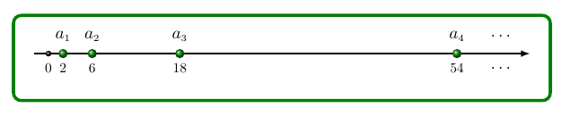
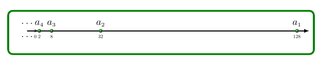

Definição. (Progressão geométrica)
Uma progressão geométrica é uma sequência na qual é constante o quociente
da divisão de cada termo pelo termo anterior. Esse quociente
constante é chamado de razão da progressão e é representado pela letra
q.
Exemplo 1
A sequência (2, 6, 18, 54, . . .) é uma progressão geométrica cuja razão
vale 3. De fato,
=
=
=
.
= 3

A sequência (128, 32, 8, 2,. . .) é uma progressão geométrica cuja razão vale
. De fato,
=
=
=
.
=

Em uma progressão geométrica (
,
,
, . . .),
para avançar um termo
basta multiplicar pela razão; para avançar dois termos, basta multiplicar
duas vezes pela razão, e assim por diante.
Relação entre dois termos quaisquer de uma P.G
(
,
, . . .,
, . . .
, . . .), uma progressão geométrica de razão q.
Então
=
q
=
q
= q
.
= q
.
= q